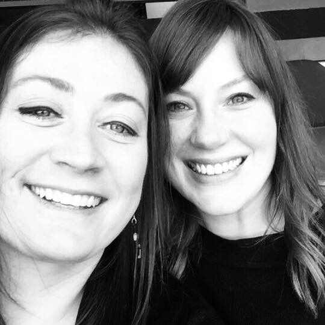

About Me
Hello and thank you for visiting my page! This phot is of me and Anna. We have two dogs and two cats and live in North Kansas City. Bruni is a chocolate lab and Macie is... a mut.
I am really excited to be taking this course and I look forward to using my creativity to create and build websites. I currently work at Cerner where I am a Test Analyst. I test software and write test scripts, as well as plan for releases and manage defects. There are always so many defects. I enjoy traveling and the coolest place I have been is Costa Rica.
My early career was a teacher. I taught Special education, Algebra, and Geometry. I also coached basketball, volleyball, and softball. I decided to change careers 4 years ago and made a move into Health IT. Since then I have put myself in any environment I can to learn and grow. Doing something is better than doing nothing. That's why I go with the moto, "Anything worth doing is worth doing poorly." I am excited to launch into this new learning!